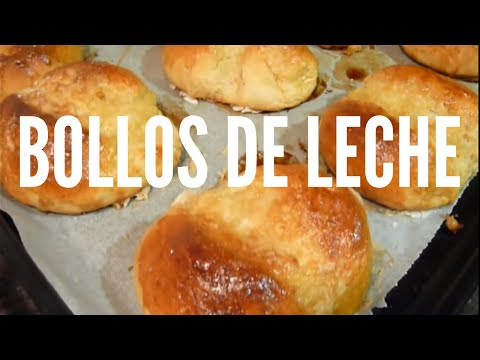

Welcome to Recetas De Bollos
Bollos – Tembi'u Paraguay
2021.06.18 21:41
Bollos
Sobre mí RECETAS TÍPICAS Chipa Sopa Chipa guasu Mbeju Caldos PANES RECETAS SALADAS Empanadas RECETAS DULCES BLOG CONTACTO
Sobre mí RECETAS TÍPICAS Chipa Sopa Chipa guasu Mbeju Caldos PANES RECETAS SALADAS Empanadas RECETAS DULCES BLOG CONTACTO Recetas 5 noviembre, 2010
Bollos
Autor: Natalia Alvarez 0 109 16Foto de I Love Paraguay
En Paraguay son los bollos de toda la vida, aunque en En Argentina y Uruguay se la denomina “bolas de fraile” o suspiros de monja y existen variantes con rellenos de dulce de leche, dulce de membrillo o crema pastelera.
En Chile se denominan “berlines” (o también “bolas de frailes”) y se emplea principalmente el relleno de crema pastelera o mermelada de membrillo.
En Venezuela se las llama “bombas”, se rellenan con crema pastelera y se espolvorean con azúcar.
MASA 500 gr Harina 000 1 pizca de Sal 2 yemas de huevos 2.5cc Esencia de vainilla liquida 80 gr azúcar 30 gr mantequilla 200 ml Leche 30 gr de levadura fresca Ralladura de naranja o limón (también se puede poner un chorrito de agua de azahar) Abundante aceite de girasol para Freir
PREPARACIÓN
Disolver la levadura con un par de cucharaditas de azucar, una cda de harina y un poco de leche. En un bol ponemos la harina en forma de corona y en el medio agregamos el azucar, las yemas y la grasa, mezclamos, posteriormente verteremos el polish (fermento anteriormente preparado), la leche restante. Mezclamos todo muy bien y amasamos un buen rato, nunca es mucho. Cuando la masa quede bien amasada la dejamos reposar en un lugar cálido (la masa tapada) Una vez doblado en volumen nos acomodamos en una mesa y espolvoreamos de harina la misma para que no se nos pegue demasiado la masa, luego traemos el bollo de masa y hacemos un chorizo largo con la misma, aprox. 3 o 4 cm de diametro. Bien una vez que tenemos la masa, empezamos a cortar, vamos cortando trozos iguales, de este corte dependerá el tamaño de la berlinesa, no se engañen ya que luego triplicará su volumen. Una vez que tenemos toda la masa troceada, haremos el bollado , bollar , es un paso muy importante, lo cierto es que los únicos que saben bollar bien son los panaderos o pasteleros que hacen esto a diario, de todos modos haremos lo que podamos. A medida que vamos bollando, las vamos acomodando en una asadera bien enmantecada y enharinada para que no se peguen. Tomen la precaución de dejar espacio suficiente entre ellas ya que crecen mucho Fermentación: Es aquí donde deben crecer todo lo posible, para eso necesitamos crear un ambiente e aproximadamente 45º y una humedad alta. Mientras preparamos una cacerola para freir las berlinesas en el cual utilizaremos un aceite de girasol. Cuando veo que las bolas han crecido mucho, y antes que comience el proceso inverso de desinflarse, con mucho cuidado una por una las voy despegando de la asadera y las ponemos a freir, el aceite debe estar caliente pero no mucho. Las bolas se frien como una chuleta, mitad de un lado y mitad del otro. Si en nuestra cacerola entran 4, freimos de a cuatro por vez, y recién las doy vuelta cuando están bien doradas por debajo. Por eso verán cuando van a comprar berlinesas en una panadería les verán una raya marcando la mitad, eso sucede porque al darlas vuelta aún siguen creciendo y mucha veces quedan unos milimetros de masa por arriba del nivel del aceite. Foto de I Love Paraguay Los churreros suelen empujarlas con una espumadera hacia abajo cuando las dan vuelta, de esta manera obtenemos un bronceadito mas parejo . Una vez que las doy vuelta espero que se doren bien del otro lado y ya están listas para sacarlas. Se suelen poner en un bol con un poco de azúcar, para que a medida que salgan ir echándolas calientes para que se pegue el azúcar. Sugerencia: Una vez fría rellenarlas con Crema Pastelera, Dulce de guayaba, o Dulce de leche Para rellenar utilizamos manga y pico o, hacemos un corte transversal tipo Pac Man y las rellenamos, dejando ver su contenido Fuente consultada y canal youtube de Sarita
AUTORA DEL BLOG
Hola Soy Natalia, paraguaya de San Lorenzo residiendo actualmente en España.
No soy cocinera. Me dedico al marketing y la creación de contenido digital para empresas y marcas. La cocina y la fotografía son mis hobbies y este blog me permite unir trabajo y hobby.
Espero que este blog te ayude a acercarte un poquito la gastronomía paraguaya, y porqué no, conocer otras recetas del mundo.
TEMAS: Dulces , Postres extranjeros , Postres paraguayos Post anterior
Chipa kandói o chipa manduvi
Siguiente postMatambre de pollo
0 109 16 Natalia Alvarez 5 noviembre, 2010 16 Comments maria dice: 5 febrero, 2021 a las 1:50 pmHola Natalia, la hice y me valieron elogios que te comparto, los bollitos los hice de 20 gramos porque tenia miedo me salieran crudas, y las frei con el aceite a temperatura media para que se cocinaran bien, el toque de limon , buenisimo!!!! Nosotros las pasamos por azucar inmediatamente al sacarlas de la cocion, Gracias por la receta, paso a ser un clasico en mi posada. Maria
Responder Natalia Alvarez dice: 2 marzo, 2021 a las 12:17 pm¡Qué alegría María! ya se me antojaron a mi también.
Responder Verónica dice: 17 febrero, 2019 a las 4:02 pmIse al pie de la letra,me salio perfecto por fuera,y por dentro me salio un poquito crudo por q??
Responder Elena dice: 17 marzo, 2019 a las 7:00 amPor la temperatura del aceite
Responder Fatima dice: 30 enero, 2019 a las 4:58 pm Cuanto tiempo
Tiene que reposar?
Mi vida!! Que admirable sos todo lo que ya hice con tus recetas no me salen tan suculentas pero salen ricos.exitos Naty segui siempre asi
Responder Kirilla bea dice: 27 agosto, 2018 a las 11:06 amSos hungara viví muchos anos en paraguay. Estoy muy felic encontrar esta receta, voy a provarlo, muchas gracias 🤗
Responder tania dice: 21 abril, 2017 a las 11:53 pmSe puede hornear????
Responder Natalia Alvarez dice: 14 septiembre, 2017 a las 3:15 pmSi Tania, pero la receta original es frita
Responder natalia colman dice: 22 abril, 2016 a las 7:44 pmJamas!!!!! Jamaaaaaas!!!!! Salio así lpm!!!!! Hice al pie de la letra y jamas Leudo ctm_!!!!!! Dos veces intente.. Y no salio dejen de pasar recetas que noo salen :'( enojada estoy Gaste demás en hacer y no salieron
Responder Natalia Alvarez dice: 27 abril, 2016 a las 12:33 pm Hola Natalia
Siento mucho tu mala experiencia pero el problema no está en la receta
Las masas son delicadas y podes ver en el facebook que a otra gente le salió fenomenal.
Hay muchas cosas a tener en cuenta, la levadura (cual usaste?) El amasado, el tiempo de levado, la temperatura, etc.
En el vídeo se explica mejor de sarita garofalo
Responder Julieta Aro dice: 17 enero, 2013 a las 11:11 pmpara la proxima en la preparacion aclara bien los pasos, el tema de la azucar y la leche ???????
Responder Alfredo dice: 11 mayo, 2011 a las 1:54 amGracias por la receta me ayudaste un monton bendiciones para vos y tu familia
Responder Naty Alvarez dice: 6 abril, 2011 a las 9:16 am1 huevo perdon, se me paso..;)
Responder Anónimo dice: 6 abril, 2011 a las 3:14 amcuantos huevos lleva? por que en los ingredientes no aparece, gracias
ResponderDeja tu comentario Cancel reply
Este sitio usa Akismet para reducir el spam. Aprende cómo se procesan los datos de tus comentarios .
También te puede interesar
Mermelada casera de frutilla
Natalia Alvarez 16 junio, 2021Mermelada de naranja
Natalia Alvarez 15 febrero, 2021Tortita o masita roja
Natalia Alvarez 18 mayo, 2020 Seguime en: Facebook Twitter Instagram Pinterest Youtube BUSCAR RECETA Sobre mi Mi nombre es Natalia. Soy paraguaya pero vivo en España.
Me dedico al marketing y la creación de contenido digital para marcas. La cocina y la fotografía son mis hobbies y este blog me permite poner en práctica lo que sé y lo que me gusta hacer.
tembiupy
Seguime en Instagram para ver contenido inédito, trucos, tips y más recetas.
Este tip ya lo compartí hace un tiempito, pero co Para que una masa ya sea de pizza, pan o masas dul 🔽RECETA DE EMPANADA DE POLLO🔽 Rinde 15 Unida #TEMBIUTIPS Esta vez comparto un tip que escuché Seguime en Instagram ULTIMAS ENTRADAS Mermelada casera de frutilla Comidas típicas paraguayas Recetas y fórmulas Mujeres que hicieron historia en la cocina paraguaya Dónde estudiar cocina en Paraguay Mis redes sociales Facebook Twitter Instagram Pinterest YoutubeCopyright ©2021, Tembi'u Paraguay . Todos los derechos reservados. No utilizar fotografías para fines comerciales sin autorización.
Sobre mí RECETAS TÍPICAS Chipa Sopa Chipa guasu Mbeju Caldos PANES RECETAS SALADAS Empanadas RECETAS DULCES BLOG CONTACTOCopyright © 2020 Tembi'u Paraguay
Our site uses cookies. Learn more about our use of cookies: Cookie Policy
ACCEPT